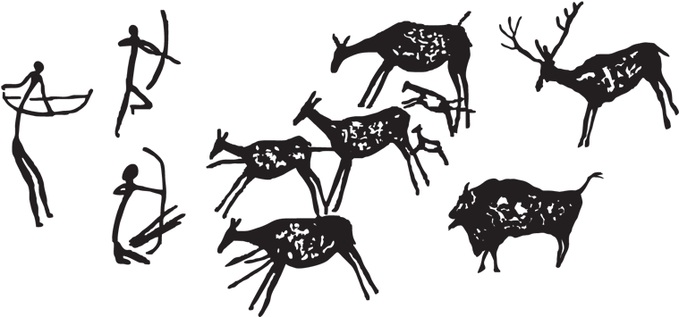

“If you want to go fast go alone. If you want to go far go together.” – African Proverb.
In this world it is easy to view life as a game in which we are all competing against each other. The best bit of advice I have received is to collaborate with people instead of competing against them.
It is easy to judge other people for their short comings but often we find those very short comings are what we a scared of ourselves.
To truly work with somebody we must understand them, what motivates them, what discourages them, right and wrong we do not have to agree but simply respect their point of view. The only way to do this is to communicate and while talking about the weather and what they did on the weekend may seem trivial, it opens the door to a deeper conversation – where the opportunity for trust may arises.
Different people have different roles and levels of authority within our lives, we don’t seem to treat our boss the same way as we treat our mates. It is important to keep in mind that we are all just humans at the end of the day and no matter our position of power we must treat others with dignity and respect.
Teamwork allows for us to all pull in the same direction, it is a great way to tackle big tasks. There is no point having a team of people all off doing there on thing with their own goals in mind
For a team to be successful I believe the question of “what is in it for me” must be addressed. At work this answer is seemingly obvious… MONEY. But with further inspection we realize nobody want money… it really is just piece of paper of digit on a screen.
In a general sense everybody in the team want to “do better” the seceret is to align the team’s success with the individual’s success.
Sometime we just need to remember those digits on the screen puts food on the table and a roof over our head – fiat currency is abstract idea of the good old days of hunting and gathering.
